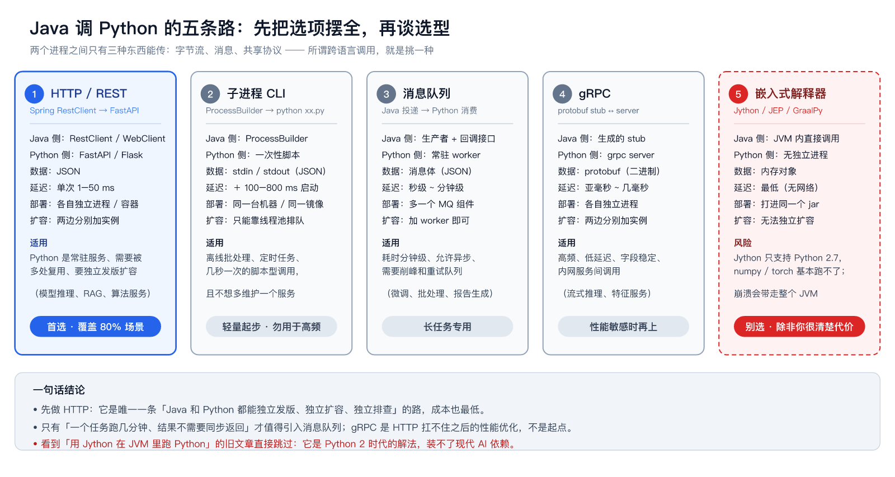
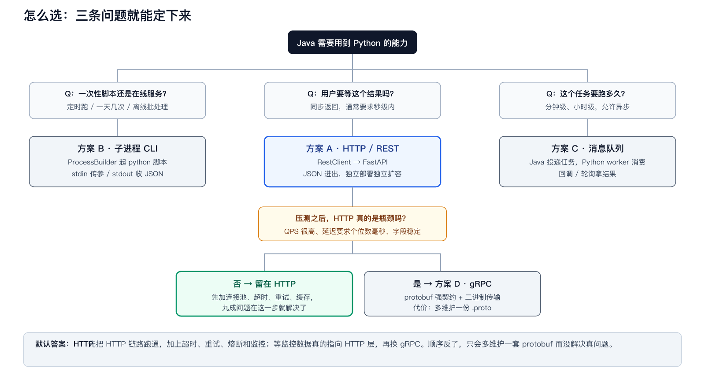
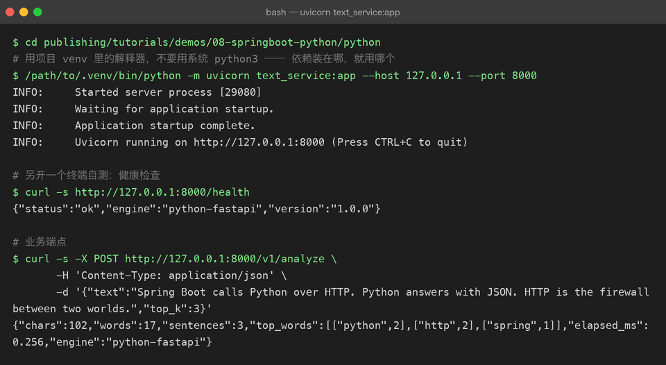
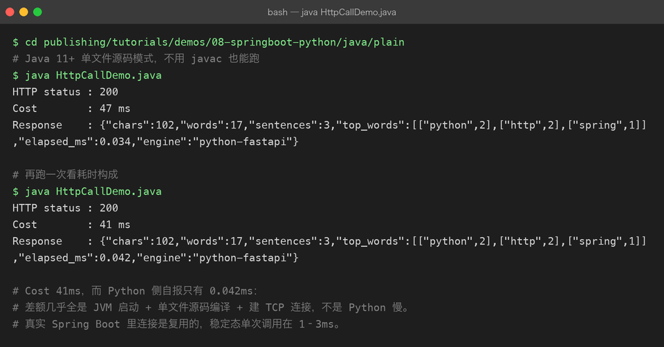
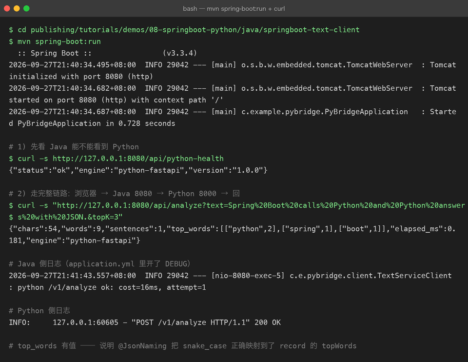
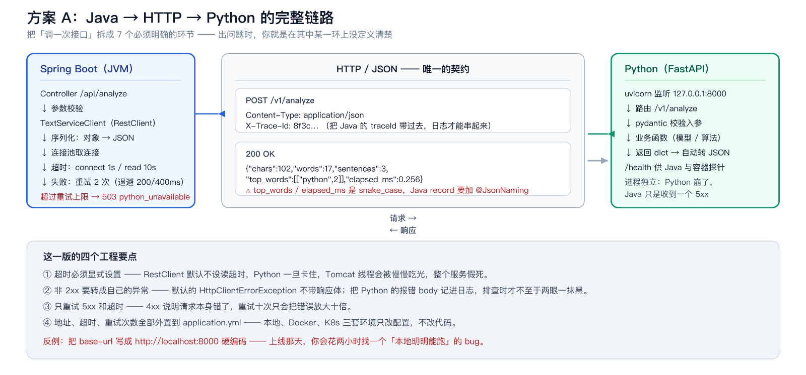
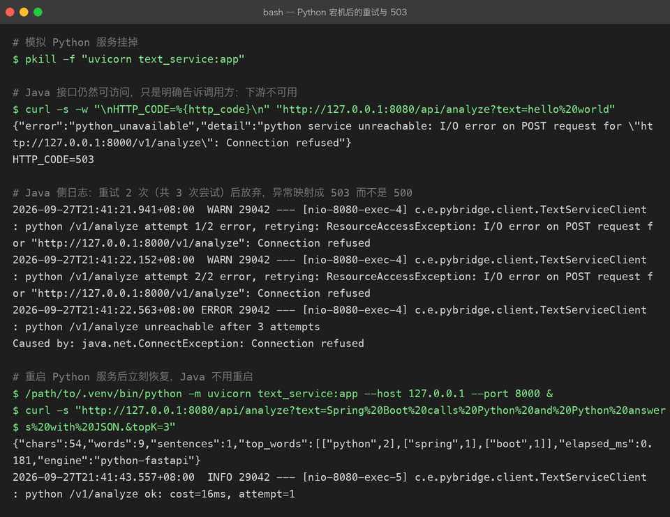
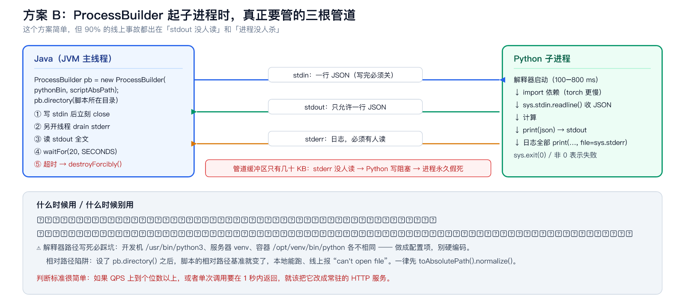
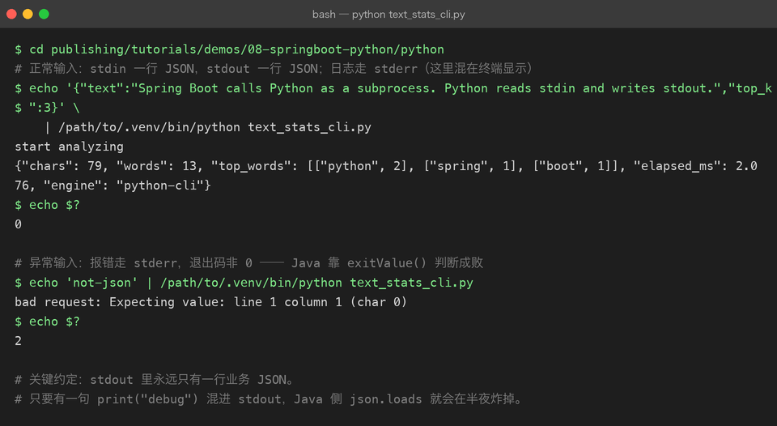
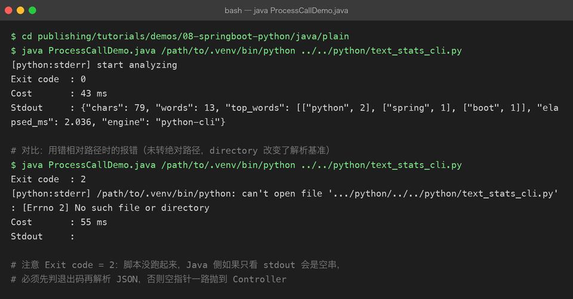

Spring Boot 怎么调 Python：五种方案、两条真实跑通的链路、一份避坑清单
写给有 Java / Spring Boot 基础、想把 Python（AI 算法、模型推理、数据处理）接进 Java 系统的开发者。 你不需要先成为 Python 工程师，才能开始集成 —— 但你需要知道进程之间到底怎么传数据、出错时谁负责。 文中架构图与流程图为本教程自制示意框图；所有终端截图均来自本机真实运行，命令与输出可在仓库 demos/08-springboot-python/ 目录复现。
一、先把结论说在前面
Java 调 Python 的本质是两个进程之间的通信问题，不是语言问题。两个进程之间只有三种东西能传：字节流、消息、共享协议 —— 所谓跨语言调用，就是从中挑一种，并把它守好。

| 方案 | Java 侧 | Python 侧 | 延迟 | 适用 |
|---|---|---|---|---|
| ① HTTP / REST | RestClient / WebClient | FastAPI / Flask | 1–50 ms | 常驻服务、要复用、要独立扩容 |
| ② 子进程 CLI | ProcessBuilder | 一次性脚本 | ＋100–800 ms 启动 | 离线批处理、定时任务 |
| ③ 消息队列 | 生产者 + 回调 | 常驻 worker | 秒~分钟 | 分钟级长任务、削峰 |
| ④ gRPC | 生成的 stub | grpc server | 亚毫秒 | 高频、低延迟、字段稳定 |
| ⑤ 嵌入式解释器 | JVM 内调用 | 无独立进程 | 最低 | 别选（见下） |
三条结论，先记下来，全文都在论证它们：
- 默认选 HTTP。它是唯一一条让 Java 和 Python 独立发版、独立扩容、独立排查的路，成本也最低。
- 只有「一个任务跑几分钟、结果不需要同步返回」才值得引入消息队列；gRPC 是 HTTP 扛不住之后的性能优化，不是起点。
- 看到「用 Jython 在 JVM 里跑 Python」的旧文章直接跳过：Jython 只支持 Python 2.7，numpy / torch 基本装不上，而且解释器崩溃会带走整个 JVM。
[!NOTE] 本文所有代码都真实跑通过：Python 3.13 + FastAPI + uvicorn，Java 17 + Spring Boot 3.3.4（RestClient）。完整工程在本仓库
publishing/tutorials/demos/08-springboot-python/，你可以直接复现文中的每一段输出。
二、怎么选：三个问题就能定下来
选型不需要背对比表，问三个问题就够了：

- 一次性脚本还是在线服务？ 定时跑、一天几次的 → 子进程；用户等着结果的 → 继续往下。
- 这个任务要跑多久？ 秒级内同步返回 → HTTP；分钟级、允许异步 → 消息队列。
- 压测之后 HTTP 真的是瓶颈吗？ 大多数系统在这一步就结束了 —— 先加连接池、超时、重试、缓存，九成问题就解决了。真的测出协议开销才换 gRPC。
顺序反了的代价很具体：先上了 gRPC，就多维护一份 .proto、一套代码生成流水线，而真正拖慢你的可能是 Python 侧那 3 秒的模型推理。
三、方案 A：HTTP（推荐，覆盖大多数场景）
3.1 Python 侧：把函数变成服务
用 FastAPI 把 Python 能力暴露成 HTTP 接口。下面的 demo 刻意只用标准库做文本统计，不依赖任何模型 —— 目的是让「Java → HTTP → Python」这条链路本身可跑、可观测；真实场景里把 analyze_text() 换成你的 embedding / 推理 / 数据处理函数即可。
# python/text_service.py
import re, time
from collections import Counter
from fastapi import FastAPI
from pydantic import BaseModel, Field
app = FastAPI(title="text-service", version="1.0.0")
TOKEN_RE = re.compile(r"[A-Za-z][A-Za-z0-9_]*")
class AnalyzeRequest(BaseModel):
text: str = Field(min_length=1, max_length=100_000)
top_k: int = Field(default=5, ge=1, le=50)
@app.get("/health")
def health():
# Java 侧做健康检查 / 容器探针就用这个端点
return {"status": "ok", "engine": "python-fastapi", "version": "1.0.0"}
@app.post("/v1/analyze")
def analyze(req: AnalyzeRequest):
started = time.perf_counter()
words = TOKEN_RE.findall(req.text)
counter = Counter(w.lower() for w in words)
return {
"chars": len(req.text),
"words": len(words),
"top_words": [[w, c] for w, c in counter.most_common(req.top_k)],
"elapsed_ms": round((time.perf_counter() - started) * 1000, 3),
"engine": "python-fastapi",
}启动与自测（注意：用 venv 里的解释器，依赖装在哪就用哪个）：

三个值得养成的习惯：
- pydantic 校验入参。
text超长、top_k传 0 都会在入口被拦下，返回 422，而不是让脏数据走进你的模型。 - 提供
/health。它同时服务两方：Java 的TextServiceClient启动检查，以及未来上容器时的 liveness probe。 - 日志用 uvicorn 自带的，别在业务代码里
print到 stdout —— HTTP 方案里 stdout 是黑盒，但日志规范同样决定你排查问题的速度。
3.2 先不用 Spring，验证一遍链路
上框架之前，先用 Java 标准库把链路打穿。这能证明一件事：跨语言调用的复杂度 100% 在网络与协议上，跟框架无关。
// java/plain/HttpCallDemo.java（Java 11+ 单文件源码模式，java HttpCallDemo.java 直接跑）
HttpClient client = HttpClient.newBuilder()
.connectTimeout(Duration.ofSeconds(3)) // 连不上要快速失败
.build();
HttpRequest request = HttpRequest.newBuilder(URI.create("http://127.0.0.1:8000/v1/analyze"))
.header("Content-Type", "application/json")
.timeout(Duration.ofSeconds(10)) // 整体超时，必须设
.POST(HttpRequest.BodyPublishers.ofString(body))
.build();
HttpResponse<String> response = client.send(request, HttpResponse.BodyHandlers.ofString());
注意 Cost 41ms 而 Python 自报只花了 0.042ms —— 差额几乎全是 JVM 启动、建连和 HTTP 往返，不是 Python 慢。真实 Spring Boot 里连接是复用的，稳定态单次调用在 1–3ms。性能问题要先归因，再动手。
3.3 Java 侧：Spring Boot 客户端（RestClient）
Spring Boot 3.2+ 自带 RestClient，同步、流畅 API，比 RestTemplate 现代，比 WebClient 轻。工程结构：
java/springboot-text-client/
├── pom.xml # 只依赖 spring-boot-starter-web
└── src/main/java/com/example/pybridge/
├── PyBridgeApplication.java
├── client/
│ ├── TextServiceClient.java # RestClient + 超时 + 重试 + 异常映射
│ └── PythonServiceException.java
└── web/
└── AnalyzeController.java # /api/analyze、/api/python-health配置先行 —— 地址、超时、重试次数全部外置，本地、Docker、K8s 三套环境只改配置不改代码：
# src/main/resources/application.yml
python:
service:
base-url: http://127.0.0.1:8000 # Docker 里改成 http://text-service:8000
connect-timeout-ms: 1000
read-timeout-ms: 10000
max-retries: 2
backoff-ms: 200客户端是整篇文章最重要的一段代码。四件事是必须的，缺一件生产就会出事：
@Component
public class TextServiceClient {
private final RestClient restClient;
private final int maxRetries;
private final long backoffMs;
public TextServiceClient(RestClient.Builder builder,
@Value("${python.service.base-url}") String baseUrl,
@Value("${python.service.connect-timeout-ms}") int connectTimeoutMs,
@Value("${python.service.read-timeout-ms}") int readTimeoutMs,
@Value("${python.service.max-retries}") int maxRetries,
@Value("${python.service.backoff-ms}") long backoffMs) {
ClientHttpRequestFactorySettings settings = ClientHttpRequestFactorySettings.DEFAULTS
.withConnectTimeout(Duration.ofMillis(connectTimeoutMs))
.withReadTimeout(Duration.ofMillis(readTimeoutMs));
this.restClient = builder
.baseUrl(baseUrl)
.requestFactory(ClientHttpRequestFactories.get(settings))
.defaultStatusHandler(HttpStatusCode::isError, (request, response) -> {
// 非 2xx 转成自己的异常，并把 Python 的报错 body 带走，
// 否则默认异常里没有响应体，排查时抓瞎
byte[] bytes = response.getBody().readAllBytes();
String body = bytes.length > 0 ? new String(bytes, StandardCharsets.UTF_8) : "<empty>";
throw new PythonServiceException(
"python service error: status=" + response.getStatusCode() + ", body=" + body,
response.getStatusCode().value());
})
.build();
this.maxRetries = maxRetries;
this.backoffMs = backoffMs;
}
public AnalyzeResult analyze(String text, int topK) {
Map<String, Object> payload = Map.of("text", text, "top_k", topK);
int attempt = 0;
while (true) {
attempt++;
long start = System.currentTimeMillis();
try {
AnalyzeResult result = restClient.post()
.uri("/v1/analyze")
.contentType(MediaType.APPLICATION_JSON)
.body(payload)
.retrieve()
.body(AnalyzeResult.class);
log.info("python /v1/analyze ok: cost={}ms, attempt={}",
System.currentTimeMillis() - start, attempt);
return result;
} catch (PythonServiceException e) {
// 4xx 是请求本身有问题，重试没意义，直接抛
if (e.getStatusCode() >= 400 && e.getStatusCode() < 500) throw e;
if (attempt > maxRetries) throw e;
sleepQuietly(backoffMs * attempt); // 退避：200ms、400ms
} catch (Exception e) {
// 连接超时 / 读超时 / DNS 失败，都属于可重试
if (attempt > maxRetries) {
throw new PythonServiceException("python service unreachable: " + e.getMessage(), 503, e);
}
sleepQuietly(backoffMs * attempt);
}
}
}
@JsonIgnoreProperties(ignoreUnknown = true)
@JsonNaming(PropertyNamingStrategies.SnakeCaseStrategy.class) // 关键注解，见下文
public record AnalyzeResult(int chars, int words, int sentences,
List<List<Object>> topWords,
double elapsedMs, String engine) {}
}四个要点，展开说：
- 超时必须显式设置。
RestClient默认不设读超时，Python 一旦卡住，Tomcat 工作线程会被慢慢吃光，整个 Java 服务假死 —— 这是集成 Python 后最常见的「雪崩起点」。 - 非 2xx 转成自己的异常。默认抛出的异常不带响应体；把 Python 的报错 body 记进日志，排查时才不至于两眼一抹黑。
- 只重试 5xx 和超时。4xx 说明请求本身错了，重试十次只会把错误放大十倍。
- 重试上限后抛 503，而不是让 Spring 兜底成 500。下游不可用和自己的 bug 是两类告警，混在一起监控就废了。
还有一个小但致命的细节：Python 返回的是 top_words / elapsed_ms（snake_case），Java record 是 topWords（camelCase）。不加 @JsonNaming(SnakeCaseStrategy.class)，这两个字段会静默反序列化成 null —— 不报错，只是值没了，等你发现时它已经在线上跑了两周。
完整工程跑起来：


3.4 下游挂了会怎样：一次真实的故障演练
集成质量不是看「正常时返回什么」，而是看「Python 挂掉时 Java 表现如何」。把 Python 服务 kill 掉再调 Java 接口：

三个现象都符合预期：
- Java 侧重试了 2 次（共 3 次尝试，间隔 200ms → 400ms），日志里每一步都可见；
- 放弃后返回 503 +
python_unavailable，而不是 500 —— 前端和监控可以正确分类； - Python 服务重启后立刻恢复，Java 不用重启，因为连接是按请求建立的，没有缓存坏状态。
Controller 里的异常映射只有几行，但它决定监控告警能不能正确分类：
@ExceptionHandler(PythonServiceException.class)
public ResponseEntity<Map<String, Object>> onPythonError(PythonServiceException e) {
return ResponseEntity.status(HttpStatus.SERVICE_UNAVAILABLE)
.body(Map.of("error", "python_unavailable", "detail", e.getMessage()));
}3.5 生产化清单
跑通只是第一步，上生产前对照这份清单：
| 项 | 做法 | 不做的后果 |
|---|---|---|
| 超时 | connect 1s / read 按 P99×2 设置，全部配置化 | Python 卡住 → Tomcat 线程池耗尽 → 整个 Java 服务假死 |
| 重试 | 只重试 5xx / 超时，2 次 + 退避 | 4xx 也重试会把错误放大十倍 |
| 熔断 | Resilience4j：错误率超阈值直接快速失败 | Python 挂了，Java 还在傻等每次 10s 超时 |
| 连接池 | ClientHttpRequestFactory 调大 maxConnTotal | 高并发下建连排队，表现为「莫名其妙变慢」 |
| 健康检查 | Java 定期打 Python /health，失败告警 | 半小时前挂的 Python，半小时后才有人发现 |
| traceId | Java 把 MDC 里的 traceId 塞进 X-Trace-Id 头 | 一次请求跨两个进程，日志对不上，排查靠猜 |
| 模型冷启动 | 启动后预热一次请求；read-timeout 按首请求放宽 | 第一个用户请求必然超时，之后恢复正常 |
| 监控 | 记录每次调用的耗时与结果分布，按 engine/端点打点 | 没有基线，性能退化无人知晓 |
[!WARN] 最常被硬编码的是
base-url。本地写http://localhost:8000，上容器环境Python 在另一个容器里，localhost 就永远指向 Java 自己 —— 你会花两小时找一个「本地明明能跑」的 bug。从第一行代码起就把它放进配置文件。
四、方案 B：子进程（ProcessBuilder）
Python 不是所有能力都值得做成常驻服务。定时任务、离线批处理、一天跑几次的脚本，用 ProcessBuilder 起子进程就够了：Java 写 stdin、读 stdout，用 JSON 交换数据。

4.1 Python 侧：stdin 进，stdout 出
# python/text_stats_cli.py
def main() -> int:
raw = sys.stdin.readline()
if not raw.strip():
print("empty stdin", file=sys.stderr)
return 2 # 非 0 退出码 = 失败
try:
payload = json.loads(raw)
except json.JSONDecodeError as exc:
print(f"bad request: {exc}", file=sys.stderr)
return 2
print("start analyzing", file=sys.stderr) # 日志走 stderr，不污染 stdout
print(json.dumps(analyze(payload), ensure_ascii=False)) # 唯一一行业务输出
return 0三条约定，缺一条线上必踩坑：
- stdout 只允许有一行业务 JSON ——
print()调试日志必须走 stderr； - 任何异常都以非零退出码退出 —— Java 靠
exitValue()判断成败； - 用
sys.stdin.readline()读，不要input()，避免交互提示阻塞。

4.2 Java 侧：把管道管好
// java/plain/ProcessCallDemo.java（节选，完整版含注释）
Path scriptPath = Path.of(script).toAbsolutePath().normalize(); // 相对路径陷阱，见下文
ProcessBuilder pb = new ProcessBuilder(pythonBin, scriptPath.toString());
pb.directory(scriptPath.getParent().toFile());
pb.redirectError(ProcessBuilder.Redirect.PIPE);
Process process = pb.start();
// ① 异步 drain stderr，防止管道缓冲区打满导致子进程阻塞
ExecutorService drain = Executors.newSingleThreadExecutor();
drain.submit(() -> { /* 读 errorStream 并打日志 */ });
// ② 写 stdin（一行 JSON），写完立刻关闭，否则 Python 的 readline() 会一直等
try (BufferedWriter writer = new BufferedWriter(
new OutputStreamWriter(process.getOutputStream(), StandardCharsets.UTF_8))) {
writer.write(payload);
writer.newLine();
}
// ③ 读 stdout，④ 带超时等待，⑤ 超时就杀
String stdout = new String(process.getInputStream().readAllBytes(), StandardCharsets.UTF_8);
boolean finished = process.waitFor(20, TimeUnit.SECONDS);
if (!finished) process.destroyForcibly();
三个必须守住的规矩：
- 必须
waitFor(timeout)—— 否则 Python 死循环会把 Java 线程永久挂住； - stderr 必须有人读 —— 管道缓冲区只有几十 KB，Python 写 stderr 阻塞，进程就假死了，而 Java 这边表现为「读不到结果」；
- 用完
destroyForcibly()—— 超时不杀进程，僵尸进程会慢慢耗尽机器资源。
截图里还有一个真实踩坑：没转绝对路径时，pb.directory() 改变了相对路径的解析基准，Python 报 can't open file、退出码 2 —— 这就是「本地能跑、线上找不到脚本」的最常见原因。一律先 toAbsolutePath().normalize()。
4.3 什么时候该放弃子进程
✅ 适合：定时任务、离线批处理、一天几次的数据脚本、本机小工具 —— 频率低，起进程的开销（100–800ms，import torch 更慢）可以接受。
❌ 不适合：在线请求链路。每秒起一次 Python 进程，光解释器启动就能把 QPS 打回个位数，CPU 和内存也会被反复 fork 吃满。
判断标准很简单：如果 QPS 上到个位数以上，或者单次调用要在 1 秒内返回，就把它改成常驻的 HTTP 服务。
五、方案 C / D：消息队列与 gRPC，什么时候才轮到它们
消息队列（方案 C）
当调用从「一问一答」变成「扔个任务就走」，HTTP 就不合适了：任务要跑几分钟，HTTP 连接撑不住，重试还可能造成重复执行。这时候引入 MQ（RabbitMQ / Kafka / Redis Stream 都行）：
- Java 侧：
spring-boot-starter-amqp，投递任务消息后立即返回任务 ID； - Python 侧：常驻 worker 消费队列，跑完把结果写回数据库或回调接口；
- 前端拿任务 ID 轮询或走 WebSocket —— 「提交」和「取结果」是两个接口，不是一个请求。
它带来的新代价也要认：消息体成为新的契约（要有版本号）、消费要幂等（重试必然发生）、多了一个 MQ 组件要运维。为分钟级任务付这些代价是值的，为 2 秒的任务是浪费。
gRPC（方案 D）
HTTP + JSON 的开销主要在两处：文本序列化和连接管理。当 Python 服务是高频、低延迟、字段稳定的内网调用（流式推理、特征服务），gRPC 的 protobuf + HTTP/2 多路复用能把单次调用压到亚毫秒：
// text.proto —— 契约先行，两边各自生成代码
service TextService {
rpc Analyze (AnalyzeRequest) returns (AnalyzeResponse);
}
message AnalyzeRequest { string text = 1; int32 top_k = 2; }
message AnalyzeResponse { int32 chars = 1; int32 words = 2; repeated WordCount top_words = 3; }代价是每次改字段都要重新生成两侧代码、走一遍发版流程。它是 HTTP 扛不住之后的优化，不是起点。
六、部署：base-url 在三套环境里怎么变
| 环境 | Python 在哪 | Java 的 base-url | 注意 |
|---|---|---|---|
| 本地开发 | 本机 8000 端口 | http://127.0.0.1:8000 | 两个终端分别起服务 |
| Docker Compose | 同一网络里的 text-service 容器 | http://text-service:8000 | 用服务名，不用 localhost |
| K8s | 独立 Deployment + Service | http://text-service.prod.svc:8000 | 配 liveness/readiness 探针指向 /health |
Docker Compose 的最小形态：
services:
text-service:
image: text-service:1.0.0 # python:3.13-slim + pip install -r req.txt
healthcheck:
test: ["CMD", "curl", "-f", "http://localhost:8000/health"]
interval: 10s
java-app:
image: java-app:1.0.0
environment:
PYTHON_SERVICE_BASE_URL: http://text-service:8000
depends_on:
text-service:
condition: service_healthyPython 的依赖必须锁定（requirements.txt 写死版本），Java 镜像里不装 Python——两个世界只在网络上握手，这是整个方案能长期维护的前提。
七、避坑清单（按踩坑频率排序）
- 超时不设：RestClient 默认无读超时，Python 一卡，Java 线程池被慢慢吃光。
base-url硬编码：换环境必炸，写进application.yml。- snake_case 静默 null：Python 返回
top_words，Java record 叫topWords，不加@JsonNaming就是 null，不报错。 - 4xx 也重试：请求本身错了，重试只会放大错误。
- stdout 混入
print：子进程方案里一句 debug 输出就能让json.loads在半夜炸掉，调试日志一律走 stderr。 - stderr 无人读：管道缓冲区几十 KB，写满即假死。
- 相对路径陷阱：
pb.directory()会改变相对路径基准，脚本一律转绝对路径。 - 解释器路径写死：开发机
/usr/bin/python3、服务器 venv、容器/opt/venv/bin/python各不相同，做成配置项。 - 依赖漂移：Python 侧不锁版本，某天
pip install拉到新版，行为悄悄变了。写死requirements.txt。 - 模型冷启动：加载模型的首个请求可能要几十秒，预热 + 单独放宽首请求超时，否则每天早上的第一个用户永远超时。
八、10 分钟自测
拿本文的 demo 自查，全部通过再谈生产：
[ ] uvicorn 起服务，curl /health 返回 ok
[ ] curl -X POST /v1/analyze，非法入参返回 422
[ ] java HttpCallDemo.java 打印 200 和 JSON
[ ] kill 掉 Python 后，Java 接口返回 503（不是 500），日志有重试记录
[ ] 重启 Python，Java 不重启即恢复
[ ] echo '{...}' | python text_stats_cli.py 输出一行 JSON，退出码 0
[ ] echo 'not-json' | python text_stats_cli.py 退出码非 0，报错在 stderr
[ ] java ProcessCallDemo.java 打印退出码 0 与 JSON本文所有代码与运行输出在本仓库的位置：
publishing/tutorials/demos/08-springboot-python/
├── python/
│ ├── text_service.py # 方案 A：FastAPI 服务
│ └── text_stats_cli.py # 方案 B：stdin/stdout 脚本
├── java/
│ ├── plain/HttpCallDemo.java # 纯 Java HttpClient（无框架）
│ ├── plain/ProcessCallDemo.java # 纯 Java ProcessBuilder
│ └── springboot-text-client/ # Spring Boot 3.3 完整工程（RestClient + 重试 + 503）
└── out/ # 文中终端截图的原始命令与输出